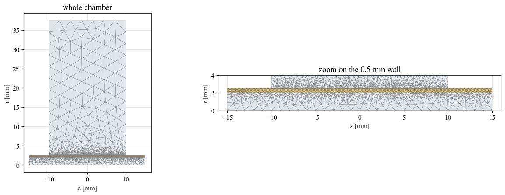
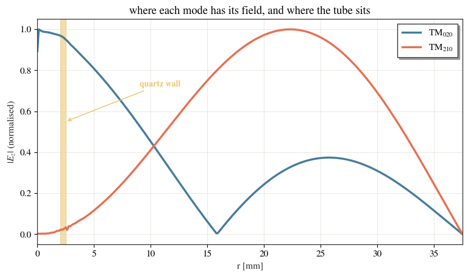
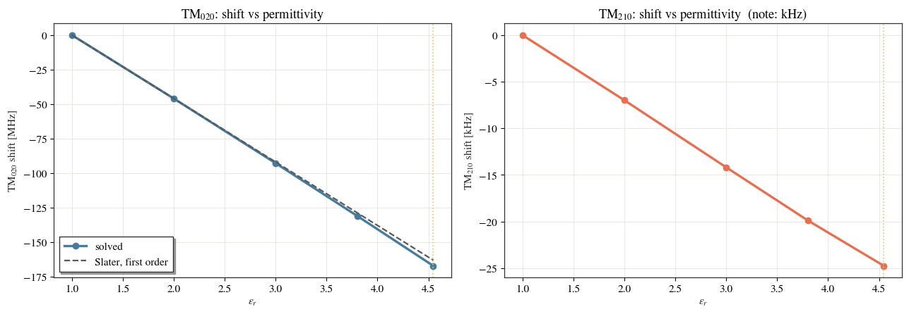

Dielectrics: a quartz tube in a perturbation cavity¶
Cavities in cavsim2d are vacuum by default. cav.add_dielectric(...) fills part
of one with a dielectric — a ceramic window, a beam-pipe liner, an
absorber ring — and the eigenmode solver then solves the loaded problem. This
notebook keeps the sample lossless; for a lossy one see
the dielectric-loss example.
The example here is a perturbation chamber: a small pillbox with a 5 mm axial aperture, used to measure material properties by inserting a sample and reading the frequency shift. The sample is a fused-quartz tube that lines the aperture and runs the full height of the chamber.
This notebook is live: every number and figure below is produced by running
cavsim2d.
We will
build the empty chamber and add the tube,
check that the thin wall is meshed and that the interface is conformal,
measure what the tube does to two modes — and see it move one by 167 MHz and the other by 28 kHz,
verify the shift against first-order cavity-perturbation theory.
import os
import tempfile
import numpy as np
import pandas as pd
import matplotlib.pyplot as plt
from scipy.special import jn_zeros, j0, j1
from cavsim2d import Pillbox
from cavsim2d.utils.style import apply_style, WARM
apply_style() # the house publication style
QUARTZ_C = WARM[7] # gold - the quartz, everywhere it is drawn
C0 = 299792458.0
trapz = getattr(np, 'trapezoid', np.trapz) # numpy renamed trapz -> trapezoid
WORK = tempfile.mkdtemp() # docs runs leave nothing behind
1. The chamber¶
A one-cell Pillbox with a short aperture stub at each end. The dims are
[L, Req, Ri, S, L_bp] in mm, so a 75 mm-diameter, 20 mm-high chamber with a
5 mm-diameter hole and 5 mm stubs is:
CHAMBER = [20.0, 37.5, 2.5, 0.0, 5.0] # L, Req, Ri, S, L_bp [mm]
EPS_QUARTZ = 4.5478 # relative permittivity of the tube
TUBE_R = (2.0, 2.5) # wall inner/outer radius [mm] - 5 mm OD, 0.5 mm wall
TUBE_MAXH = 0.15 # local mesh size inside the wall [mm]
def build(name, eps_r=None):
"""The chamber, optionally loaded with the quartz tube."""
cav = Pillbox(1, CHAMBER, beampipe='both')
cav.set_workspace(os.path.join(WORK, name))
if eps_r is not None:
# z spans everything and is clipped to the cavity, so this simply means
# "the full length". Lengths are in mm, like every other cavity dimension.
cav.add_dielectric('quartz', eps_r, z=(-1e4, 1e4), r=TUBE_R, maxh=TUBE_MAXH)
return cav
build('preview').plot('geometry')

<Axes: xlabel='$z$ [mm]', ylabel='$r$ [mm]'>
2. Adding the tube¶
One call declares the region and its permittivity:
cav.add_dielectric('quartz', 4.5478, z=(-1e4, 1e4), r=(2.0, 2.5), maxh=0.15)
The region is an axisymmetric rectangular ring in the (z, r) meridian plane
— an annular cylinder in 3D. maxh sets the element size inside the region,
which a thin wall needs: 0.5 mm of quartz in a 75 mm chamber would otherwise be
crossed by a single element.
The mesh gains a material named quartz alongside the background Domain, and
the vacuum/quartz interface becomes its own boundary, IF_quartz. That interface
carries no boundary condition — it is not PEC — and the mesh is glued so it
is conformal. Both matter: a non-conformal interface would leave the
sub-domains electrically disconnected and the solver would return spurious modes
of the isolated pieces. Profile.mesh() checks this and raises, so the zero
below is enforced, not hoped for.
from ngsolve import VOL
from cavsim2d.solvers.NGSolve.eigen_ngsolve import NGSolveMEVP
mesh = NGSolveMEVP()._build_mesh(build('meshcheck', EPS_QUARTZ), 3e-3, 1)
print('materials :', mesh.GetMaterials())
print('boundaries:', sorted(set(mesh.GetBoundaries())))
print('elements :', mesh.ne)
pts = np.array([mesh[v].point for v in mesh.vertices])
_, counts = np.unique(np.round(pts, 12), axis=0, return_counts=True)
print('duplicated interface nodes:', int((counts > 1).sum()), '(0 = conformal)')
materials : ('quartz', 'Domain', 'Domain')
boundaries: ['AXI', 'IF_quartz', 'PEC', 'PMC']
elements : 3087
duplicated interface nodes: 0 (0 = conformal)
fig, axes = plt.subplots(1, 2, figsize=(13, 4.6))
for ax, zoom, title in [(axes[0], None, 'whole chamber'),
(axes[1], ((-16, 16), (0, 4)), 'zoom on the 0.5 mm wall')]:
for el in mesh.Elements(VOL):
v = np.array([mesh[k].point for k in el.vertices]) * 1e3 # -> mm
ax.fill(v[:, 0], v[:, 1], lw=0.25, edgecolor='0.35',
facecolor=QUARTZ_C if el.mat == 'quartz' else '#dfe6ec')
ax.set_xlabel('z [mm]'); ax.set_ylabel('r [mm]')
ax.set_aspect('equal'); ax.set_title(title)
if zoom:
ax.set_xlim(zoom[0]); ax.set_ylim(zoom[1])
plt.tight_layout(); plt.show()

3. What the tube does to the spectrum¶
The chamber is used on two modes, TM\(_{020}\) and TM\(_{210}\). Each solved mode is matched to its nearest analytic empty-pillbox partner so we can pick the two by name rather than by index.
def f_tm(m, n, p, R, L):
"""Analytic TM_mnp frequency [MHz] of an empty pillbox; R, L in mm."""
return C0 / (2 * np.pi) * np.hypot(jn_zeros(m, n)[n - 1] / (R * 1e-3),
p * np.pi / (L * 1e-3)) * 1e-6
R_CH, L_CH = CHAMBER[1], CHAMBER[0]
F_TM020, F_TM210 = f_tm(0, 2, 0, R_CH, L_CH), f_tm(2, 1, 0, R_CH, L_CH)
def solve(cav):
"""Solve both families; return (f_TM020, f_TM210) in MHz plus the table."""
cav.eigenmode.run(polarisation=['monopole', 'quadrupole'], n_modes=4,
mesh_config={'h': 3, 'p': 3})
df = cav.eigenmode.qois_df
out = []
for m, f_ref in [(0, F_TM020), (2, F_TM210)]:
fam = df[df['m'] == m]
out.append(fam.iloc[(fam['freq [MHz]'] - f_ref).abs().argmin()])
return np.array([r['freq [MHz]'] for r in out]), out
cav_empty = build('empty')
cav_loaded = build('loaded', EPS_QUARTZ)
f_empty, _ = solve(cav_empty)
f_loaded, rows_loaded = solve(cav_loaded)
pd.DataFrame({'analytic, empty [MHz]': [F_TM020, F_TM210],
'empty [MHz]': f_empty,
'with quartz [MHz]': f_loaded,
'shift [MHz]': f_loaded - f_empty,
'shift [%]': 100 * (f_loaded - f_empty) / f_empty},
index=['TM020', 'TM210']).round(4)
| analytic, empty [MHz] | empty [MHz] | with quartz [MHz] | shift [MHz] | shift [%] | |
|---|---|---|---|---|---|
| TM020 | 7023.5195 | 7029.1778 | 6862.3652 | -166.8126 | -2.3731 |
| TM210 | 6534.3538 | 6534.3189 | 6534.2902 | -0.0287 | -0.0004 |
One 0.5 mm-thick ring moves TM\(_{020}\) by well over a hundred MHz and TM\(_{210}\) by a few tens of kHz — nearly four orders of magnitude apart.
That is not a quirk of the solver; it is where the two modes keep their field.
4. Why: the tube sits on one mode and not the other¶
def radial_profile(cav, row, n=300):
"""|E_z| envelope along r at the mid-plane, normalised to its peak."""
mode, pol = int(row['mode']), row['polarisation']
gfu_E, _ = cav.get_fields(mode=mode, pol=pol)
u, _ = gfu_E[mode].components
msh = gfu_E[mode].space.mesh
r = np.linspace(1e-4, R_CH * (1 - 1e-4), n)
v = []
for ri in r:
try:
v.append(u(msh(0.0, ri * 1e-3))[0])
except Exception:
v.append(np.nan)
v = np.abs(np.array(v, dtype=float))
return r, v / np.nanmax(v)
fig, ax = plt.subplots(figsize=(9, 4.8))
for row, name, col in zip(rows_loaded, ['TM$_{020}$', 'TM$_{210}$'],
[WARM[0], WARM[5]]):
r, v = radial_profile(cav_loaded, row)
ax.plot(r, v, lw=2.4, color=col, label=name)
ax.axvspan(*TUBE_R, color=QUARTZ_C, alpha=0.55, zorder=0)
ax.annotate('quartz wall', xy=(TUBE_R[1], 0.55), xytext=(9, 0.72),
color=QUARTZ_C, fontsize=10, fontweight='bold',
arrowprops=dict(arrowstyle='->', color=QUARTZ_C))
ax.set_xlabel('r [mm]'); ax.set_ylabel(r'$|E_z|$ (normalised)')
ax.set_xlim(0, R_CH); ax.legend()
ax.set_title('where each mode has its field, and where the tube sits')
plt.show()

The shaded strip is the entire tube. TM\(_{020}\) is at ~100 % of its peak there (\(J_0(0) = 1\) on the axis); TM\(_{210}\) is at essentially zero, because a quadrupole field goes as \(r^2\) near the axis. A perturbation only shifts a mode in proportion to the field it actually sees.
This is exactly what makes the geometry useful for measurement: TM\(_{210}\) is an almost sample-independent reference sitting next to a sample-sensitive TM\(_{020}\).
5. Does it agree with perturbation theory?¶
For a thin sample, first-order cavity-perturbation theory gives
\(E_z\) is tangential to the tube wall, so \(E\) (not \(D\)) is continuous across it and this plain form applies. Sweeping \(\varepsilon_r\) tests the solver against it.
def slater_shift(eps_r):
"""First-order predicted fractional shift of TM020 from the tube."""
R = R_CH * 1e-3
x02 = jn_zeros(0, 2)[1]
rr = np.linspace(TUBE_R[0] * 1e-3, TUBE_R[1] * 1e-3, 200)
num = trapz(j0(x02 * rr / R) ** 2 * rr, rr) # weight over the tube annulus
den = R ** 2 * j1(x02) ** 2 / 2 # over the full disc
return -(eps_r - 1) / 2 * num / den
scan = [1.0, 2.0, 3.0, 3.8, EPS_QUARTZ]
solved = {e: solve(build('eps_%s' % str(e).replace('.', 'p'), e))[0] for e in scan}
# Reference the shifts to the SAME mesh at eps_r = 1, not to the unloaded run:
# the region splits the mesh and refines it locally, so comparing against the
# coarse empty mesh would fold a ~0.2 MHz discretisation difference into every
# row. Against eps_r = 1 the only thing that changes is the permittivity.
f_ref = solved[1.0]
scan_df = pd.DataFrame(
[{'eps_r': e, 'TM020 [MHz]': solved[e][0], 'TM210 [MHz]': solved[e][1],
'TM020 shift [MHz]': solved[e][0] - f_ref[0],
'predicted [MHz]': slater_shift(e) * f_ref[0]} for e in scan]
).set_index('eps_r')
scan_df.round(4)
| TM020 [MHz] | TM210 [MHz] | TM020 shift [MHz] | predicted [MHz] | |
|---|---|---|---|---|
| eps_r | ||||
| 1.0000 | 7029.4036 | 6534.3151 | 0.0000 | -0.0000 |
| 2.0000 | 6983.4773 | 6534.3082 | -45.9263 | -45.9302 |
| 3.0000 | 6936.6734 | 6534.3010 | -92.7301 | -91.8605 |
| 3.8000 | 6898.5361 | 6534.2953 | -130.8675 | -128.6047 |
| 4.5478 | 6862.3656 | 6534.2904 | -167.0379 | -162.9513 |
fig, axes = plt.subplots(1, 2, figsize=(13, 4.6))
e = scan_df.index.to_numpy()
axes[0].plot(e, scan_df['TM020 shift [MHz]'], 'o-', color=WARM[0], lw=2.4,
label='solved')
axes[0].plot(e, scan_df['predicted [MHz]'], '--', color='0.35', lw=1.6,
label='Slater, first order')
axes[0].set_ylabel('TM$_{020}$ shift [MHz]'); axes[0].legend()
axes[0].set_title('TM$_{020}$: shift vs permittivity')
axes[1].plot(e, (scan_df['TM210 [MHz]'] - f_ref[1]) * 1e3, 'o-',
color=WARM[5], lw=2.4)
axes[1].set_ylabel('TM$_{210}$ shift [kHz]')
axes[1].set_title('TM$_{210}$: shift vs permittivity (note: kHz)')
for a in axes:
a.set_xlabel(r'$\varepsilon_r$')
a.axvline(EPS_QUARTZ, color=QUARTZ_C, lw=1.2, ls=':')
plt.tight_layout(); plt.show()

The solved shift follows the first-order line closely at small \(\varepsilon_r\) and falls a little below it as the tube strengthens — exactly as expected, since perturbation theory assumes the mode shape does not change, while a strong tube concentrates field into itself. The agreement at the weak end is the check that the dielectric is being solved correctly.
Read the other way, this is the measurement principle: the TM\(_{020}\) shift is a monotonic, near-linear function of \(\varepsilon_r\), so measuring the shift determines the sample’s permittivity.
Extra QOI: the peak field inside the dielectric¶
\(E\) is discontinuous across the interface, so the wall-sampled Epk cannot see
the field inside the sample — the one that matters for breakdown. Each region
gets its own entry:
# rows_loaded[0] is the TM020 row picked above. (cav.eigenmode.qois would give
# the default mode of interest instead - the monopole fundamental, TM010.)
q = rows_loaded[0]
print('mode: TM020')
for k in ['freq [MHz]', 'Q []', 'R/Q [Ohm]', 'U [J]',
'Epk [MV/m]', 'Epk_quartz [MV/m]']:
print(' %-20s %.6g' % (k, q[k]))
mode: TM020
freq [MHz] 6862.37
Q [] 16879.7
R/Q [Ohm] 100.887
U [J] 2.78163e-11
Epk [MV/m] 0.00370244
Epk_quartz [MV/m] 0.00331698
Limits¶
No loss tangent was declared here, so the
Qabove is wall loss alone. That is the right model for this sample — fused quartz has \(\tan\delta \sim 10^{-4}\) and a small filling factor, so the dielectric barely contributes — but a genuinely lossy sample needsadd_dielectric(..., tan_delta=...); see the dielectric-loss example.mu_ris still rejected, not ignored.Eigenmode only.
wakefieldandmultipactingraise on a cavity with dielectric regions rather than returning a vacuum answer for it.Native geometry only. A cavity meshed from an imported
.geofile cannot carry regions, because gmsh writes a single physical surface and the STEP round-trip drops surface names. Every built-in model has a nativeprofile().Regions are cut in order, so where two overlap the one added first wins.
See :doc:../../eigenmode for the configuration reference, including the
materials key that overrides a region’s \(\varepsilon_r\) per run.